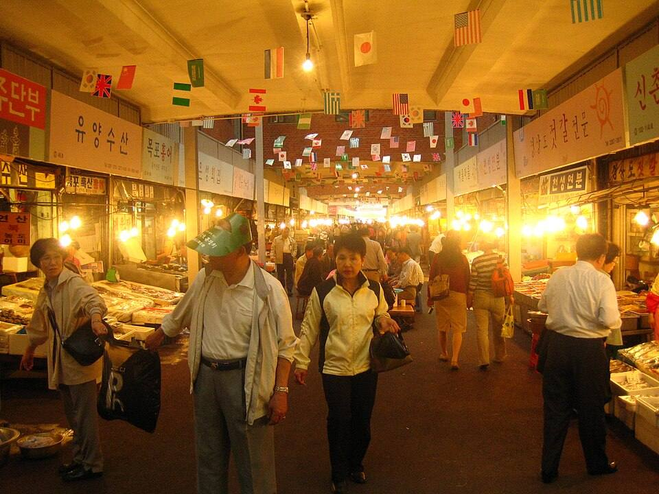
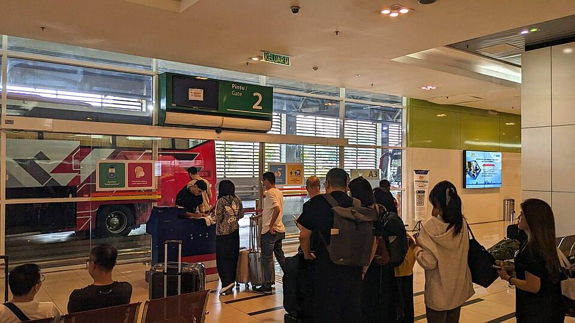
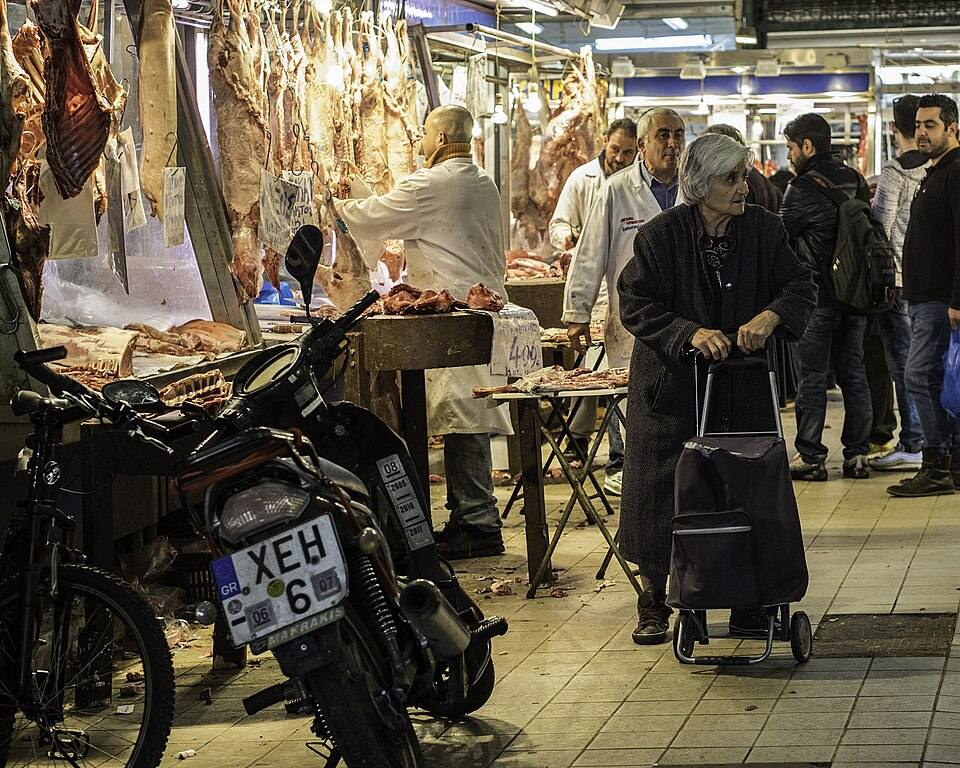
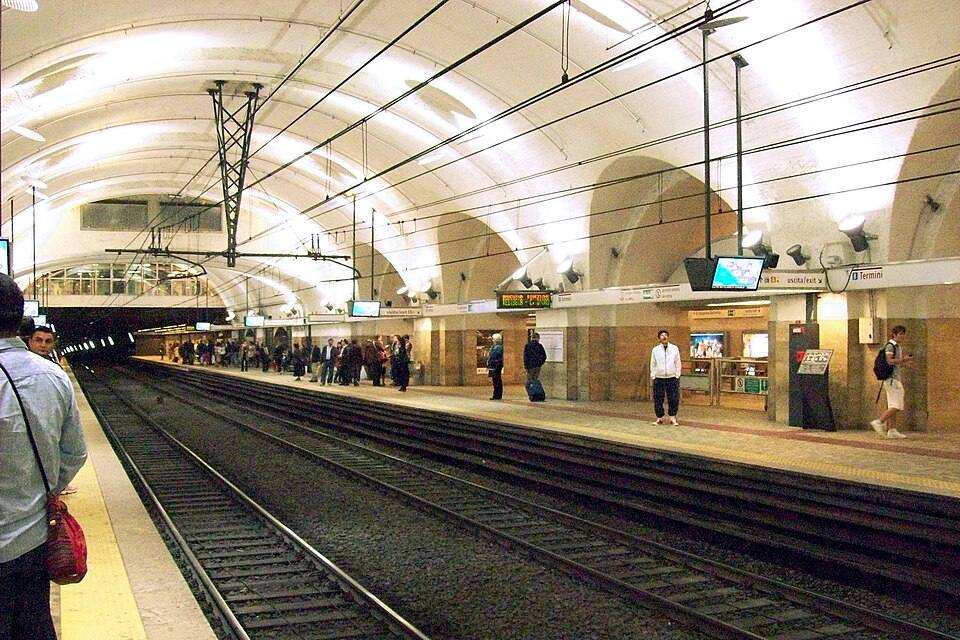
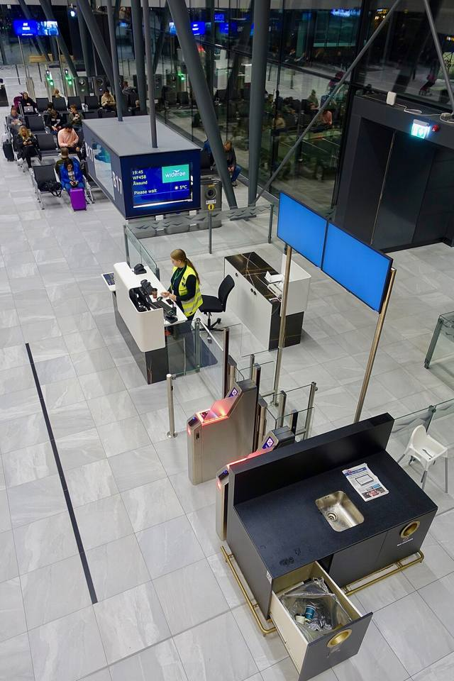

旅の前の7日で、
その場で使う20の言い方。
ひとことタグ
ICN ソウル
店の5つ
이거 얼마예요?
イゴ オルマエヨ？
これはいくらですか
iPhone・Android 無料／ぜんぶ入り 980円（買い切り）
タグの中の写真：スーツケースを持って川沿いに立つ人（撮影地は記載なし。アプリの利用者ではありません）。Giuseppe Milo／Wikimedia Commons／CC BY 3.0
行き先と場面をえらぶ
行き先を選ぶと、空港・駅・店・宿の場面ごとに5つずつ、20の言い方が出ます。ここでは8つの行き先のうち4つを、アプリと同じ中身で試せます。
声のボタンは、この作例ではブラウザの読み上げの声で鳴ります（端末に声が無いと鳴りません）。すみれ色のボタンで、店の人に見せる画面が開きます。
ソウル・韓国語ICN
- これはいくらですか？이거 얼마예요?イゴ オルマエヨ？
- これをください이거 주세요.イゴ ジュセヨ
- カードで払えますか？카드 돼요?カドゥ ドェヨ？
- 袋はいりません봉투는 괜찮아요.ポントゥヌン ケンチャナヨ
- 少し安くなりますか？조금 싸게 해 주세요.チョグム サゲ ヘ ジュセヨ
店 5つのうち 5つ目まで・きょうは3日目

出発の7日前から、1日5分
出発の日を入れると、7日前の朝から1日1回お知らせが来ます。1日に覚えるのは1つの場面の5つだけ。最後の3日は、つかえた言い方をもう一度です。

- 7日前
空港
着いてから市内に出るまでの5つ。
- 6日前
駅
切符・乗り換え・トイレ。
- 5日前
店
値段を聞く・払う・袋。
- 4日前
宿
チェックイン・荷物・お湯。
- 3日前
つかえた所
4日で止まった言い方だけ。
- 2日前
声だけ
日本語を隠して聞きとる。
- 1日前
保存
機内モードで開けるか確かめる。
声を聞いて、まねて、
画面を見せる
言えなかったときは、画面を横にして相手に見せます。字が大きくなり、相手が指させる答えが下に出ます。
카드 돼요?
カードで払えますか？（ソウル・店）
네아니요현금만
- 聞く
- 声の速さは 0.6・0.8・1.0 倍の3つ。ゆっくりでも、音の高さは変わりません。
- まねて言う
- 自分の声を録って、お手本と続けて聞き比べます（買い切り）。点数は付けません。
- 見せる
- 相手の答えは「はい・いいえ・現金だけ」のように、その場面でよく返ってくるものを3つまで。
- 機内モードで使う
- 行き先ごとに端末に保存します。1つの行き先で約 38MB（買い切り）。

無料と、買い切り980円
8つの行き先
ソウル（韓国語）・台北（中国語）・バンコク（タイ語）・ローマ（イタリア語）・ハノイ（ベトナム語）・パリ（フランス語）・バルセロナ（スペイン語）・ホノルル（英語）。どの行き先も、場面と言い方の数は同じです。
よくある質問
20の言い方で足りますか？
会話を続けるためのアプリではありません。空港から宿まで、その場で言うことが決まっている場面だけに絞っています。返事が分からないときは、見せる画面の答えを相手に指さしてもらいます。
その国の文字が読めなくても使えますか？
どの言い方にもカタカナの読みと声が付いています。読みは日本語の音に近づけたもので、正確な発音は声で確かめてください。
機内モードや、通信の無い所で使えますか？
買い切りにすると、行き先ごとに端末に保存できます（1つの行き先で約38MB）。無料のままでは通信が要ります。
話す人で言い方が変わる言葉はどうなりますか？
タイ語の文の終わり（男性は「クラップ」、女性は「カ」）は、設定で切り替えます。この作例の言い方は「クラップ」で載せています。
機種を替えたら、買い切りはどうなりますか？
同じ Apple ID か Google アカウントなら、「購入を復元」で戻せます。iPhone と Android の間では引き継げません。
出発の日はどこに送られますか？
出発の日とお知らせの時刻は端末の中だけに置き、どこにも送りません。会員の登録もありません。
返金はできますか？
お支払いは App Store と Google Play が受けているので、返金はそれぞれのストアの決まりに従います。

まずは無料で、空港の5つから
iOS 16 以降・Android 10 以降。ボタンは作例のため、ストアには移動しません。
ひとことタグ・朝 7:30 のお知らせ
出発の7日前です。きょうは空港の5つ（約5分）。
